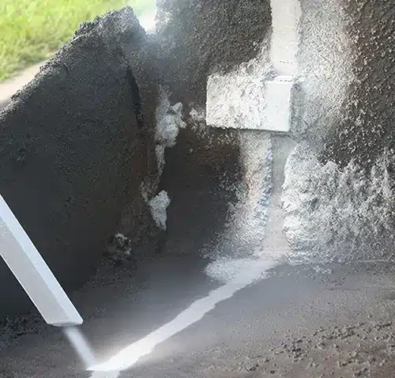
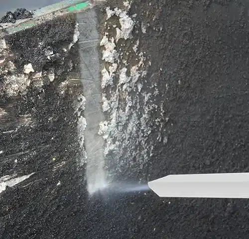

01
HEAVY OIL, CARBON & BITUMEN REMOVAL
중질유 · 카본 · 비투멘 제거


중질유 · 비투멘 · 파라핀 · 카본을
설비 구조를 보존하면서 제거합니다.
열교환기와 펌프, 용기, 모터, 배관에는 중질유와 비투멘, 카본, 부식성 물질이 두껍게 쌓입니다. 운송 장비와 유전 설비도 마찬가지입니다. 연마 방식은 오염물과 함께 모재를 깎아내고, 용제는 유해 폐기물을 남깁니다.
드라이아이스 세척은 설비의 구조적 무결성을 보존하면서 이 침착물을 제거하는 방식으로 활용됩니다. Cold Jet은 운송 장비의 두꺼운 카본·비투멘 제거, 정유소 저장 탱크 세척, 유전 설비의 부식성 물질 제거 사례를 제시하고 있습니다. 유출물 정리와 가용성 염·염화물 제거에도 활용됩니다.
대표 대상
- 열교환기 · 펌프 · 용기
- 저장 · 생산 · 압력 탱크
- 배관 · 밸브 · 게이지
- 운송 장비 · 유전 설비